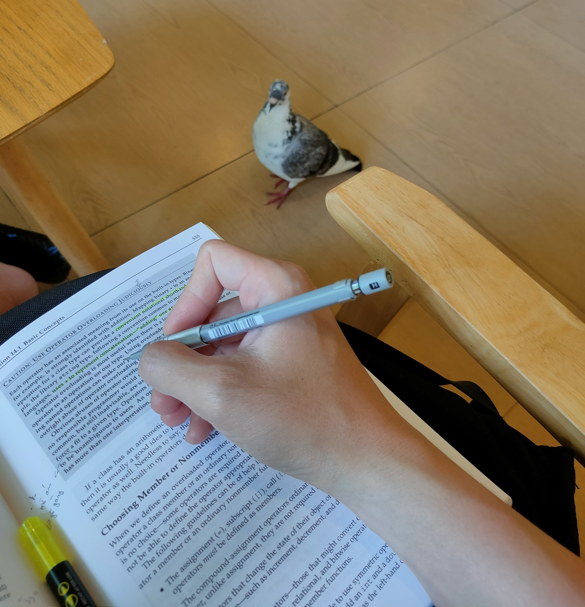
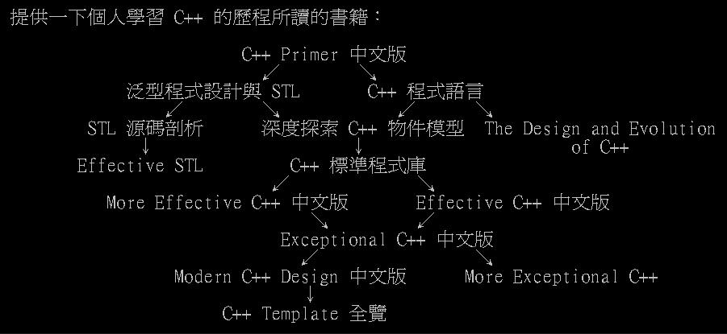

Tự học C++ (dịch từ tiếng Hoa)
Bài báo này của một tác giả người Đài Loan viết, bản thân mình thấy rất chi tiết và có thể dùng như một cách để định hướng học ngôn ngữ C++ nên mình đã dịch lại để đọc khi cần.
Bài viết gốc có thể được tìm ở đây

Gần đây, tôi thường được hỏi về cách học C++.
Vào năm 2005, tôi đã chia sẻ quá trình đọc sách về C++ trên diễn đàn toàn quốc của BBS, một cộng đồng trao đổi kiến thức về lập trình. Tuy nhiên, sau một thời gian, bài viết đó đã biến mất, nhưng tôi may mắn vẫn giữ được bức ảnh của nó.

Có lẽ một số người đã từng đọc qua những điều này, nhưng với sự xuất hiện của C++11, sự rút lui của Hầu Cảnh trong cộng đồng dịch tiếng Trung phồn thể và sự rút lui của Scott Meyers khỏi thế giới xuất bản C++, hầu hết những cuốn sách này đã trở nên lỗi thời và hầu hết các bản dịch cũng đã ngừng phát hành. Bức ảnh này cũng không còn phù hợp vào ngày hôm nay năm 2022. Nhưng tôi đã lớn lên trong một môi trường học tập như vậy, vì vậy tôi cũng không thể cung cấp một phương pháp học C++ mới trong năm 2022. Dù hai quyển sách cơ bản về C++ khi đó, The C++ Programming Language và C++ Primer, đã được thay thế bằng phiên bản mới nhất hiện nay, The C++ Programming Language 4/e (bản dịch tiếng Trung) và C++ Primer 5/e (bản dịch tiếng Trung), chúng cũng đã trở nên lỗi thời, và việc đọc kỹ hai quyển sách này không đủ để hiểu hết kiến thức cơ bản về C++. Thật lòng mà nói, từ năm 2011 trở đi, tôi cũng không biết phải dạy một người mới học C++ như thế nào. Vì vậy, tôi xin lỗi, tôi cũng không thể giúp được gì nhiều, đây chỉ là một bài viết vô ích. Tuy nhiên, vì đã viết bài vào thời điểm đó, về mặt đạo đức, tôi cũng cần phải giải thích ở đây một chút.
Như đã đề cập trước đó, bức ảnh chỉ là tập hợp các sách về C++ mà tôi đã đọc vào năm 2005, khi tôi còn là sinh viên năm nhất. Điều này không có nghĩa là bạn cần phải đọc nhiều sách để hiểu về C++ cơ bản. Nếu bạn dành thời gian vào năm 2022 để đọc từng quyển theo cách truyền thống, bạn sẽ gặp khó khăn. Trước hết, bạn cần tìm kiếm các bản dịch tiếng Trung cũng như sách gốc đã ngừng xuất bản; tuy nhiên, đọc sách gốc cũng là một lựa chọn. Nếu bạn mới bắt đầu học C++, sau khi đã tìm hiểu về các tính năng ngôn ngữ trong C++20, việc đọc các sách cũ có thể gây nhầm lẫn vì một số vấn đề đã được giải quyết trực tiếp bằng các cơ chế mới sau C++11, hoặc cách giải quyết đã trở nên đơn giản hơn. Tóm lại, như tôi đã viết trong bài báo đó, năm 2022 đòi hỏi một số điều bổ sung.
Trước hết, khi nói về C++ Primer, tôi nhấn mạnh về phiên bản thứ ba của nó. Tuy nhiên, cách viết từ phiên bản thứ tư của C++ Primer đã mất đi sự toàn diện và sức mạnh ban đầu. C++ Primer 3/e ban đầu là một tài liệu đầy đủ về C++, giúp độc giả hiểu sâu về ngôn ngữ này và dễ dàng xử lý các lỗi từ trình biên dịch. Thậm chí nếu quên một số điều, độc giả cũng nhanh chóng nhớ lại các quy tắc và sửa lỗi một cách hiệu quả. Đó là sức mạnh của C++ Primer 3/e. Tuy nhiên, tác giả có lẽ hối hận về việc viết một cuốn sách phức tạp như vậy, gây khó khăn cho người đọc. Sau đó, Essential C++ ra đời với mục tiêu làm cho việc học C++ dễ dàng hơn, nhưng đối với tôi, cuốn sách này không đáng giá. Mặc dù mua với mục đích giảng dạy, nó không mang lại giá trị gì đáng kể. Vào thời điểm đó, đọc Essential C++ không khác gì đọc C++ How to Program, một cuốn được nhiều người khuyên đọc. Từ phiên bản C++ Primer 4/e trở đi, tác giả đã thay đổi nhiều, loại bỏ nhiều chương khó hiểu trực tiếp, nhưng phiên bản 5/e dường như chỉ là một bản vá cho C++11. Thật sự, tôi không thấy việc đọc nó còn ý nghĩa. Sự toàn diện đã không còn như trước, và việc đọc hết nó không còn đáng giá như trước. Một cách nào đó, tôi nghĩ các cuốn sách của Lippman không còn cần thiết phải đọc nữa, dù ông ta không viết thêm sách mới.
So với C++ Primer, cuốn The C++ Programming Language của Bjarne Stroustrup, "ông già" của C++, vẫn là lựa chọn đáng đọc hơn. Bởi vì C++ là ngôn ngữ mà ông đã tạo ra, ông hiểu rõ mỗi cơ chế của C++, cũng như lý do tại sao chúng được thêm vào. Sách của ông được sắp xếp một cách có ý nghĩa lịch sử, giúp độc giả hiểu về bản chất của C++ theo cách cổ điển nhất. Nếu bạn quan tâm đến lịch sử của các cơ chế ngôn ngữ trong C++98, The Design and Evolution of C++ là một tài liệu quan trọng. Tuy nhiên, việc đọc nhiều sách này vào năm 2022 không được đề xuất, vì sau C++11, sách này không còn được coi trọng như trước. C++ cũng không còn là "đứa con" của Bjarne Stroustrup sau nhiều sự can thiệp từ ủy ban tiêu chuẩn. Mặc dù có những khác biệt trong quan điểm giữa ông và C++98, việc đọc cuốn sách này vẫn có giá trị, đặc biệt nếu bạn muốn hiểu rõ ý định ban đầu của "ông già" về C++ và tránh sai lầm khi sử dụng các cơ chế ngôn ngữ trong C++98.
Phiên bản dịch tiếng Trung của cuốn Inside the C++ Object Model (深度探索 C++ 物件模型) đã ngừng phát hành từ lâu, và thực tế, sách gốc cũng có nhiều vấn đề cần phải sửa đổi. Phiên bản dịch này do Hầu Cảnh thực hiện đã chỉnh sửa nhiều lỗi trong sách gốc. Tuy nhiên, vào năm 2022, không cần thiết phải đọc sách này nhiều để hiểu về vtable và cấu trúc bộ nhớ của đối tượng. Bạn có thể tìm kiếm trên Google để tìm thông tin về chủ đề này, với nội dung phù hợp với thời đại hiện đại hơn. Thực sự, không cần phí thời gian đọc cuốn sách mà Lippman viết vào thời điểm đó.
Các cuốn sách trong series Effective được viết bởi Scott Meyers, và series Exceptional được viết bởi Herb Sutter, một người hoạt động tích cực trong cộng đồng C++ cho đến ngày nay. Những cuốn sách này tổng hợp những ý kiến hay nhất từ các diễn đàn trên Internet vào thời điểm đó, chứa đựng nhiều vấn đề khó khăn và cạm bẫy mà người làm việc với C++ có thể gặp phải trong thực tế. Đọc series sách này trước khi bắt đầu thực sự làm việc có thể giúp tránh xa những lỗi mà người đi trước đã gặp phải.
Tuy nhiên, các cuốn sách trong series Effective và Exceptional đã lỗi thời, và nếu người không hiểu sự khác biệt giữa C++11 và C++98 mà đọc những cuốn này, có thể họ sẽ sử dụng các cơ chế cũ trong sách để giải quyết vấn đề thay vì sử dụng các cơ chế ngôn ngữ mà C++11 và C++20 cung cấp.
Mặc dù sau khi C++11 ra đời không có bộ sách nào khác được xuất bản trên thế giới có sự hoàn chỉnh như vậy, vào năm 2022, việc quyết định liệu người mới học C++ đã đọc xong C++ Primer hoặc The C++ Programming Language có nên đọc series sách này hay không vẫn là một quyết định khó khăn.
Tuy nhiên, có thể khẳng định rằng, cuốn Effective C++ 3/e được cập nhật vào năm 2005 vẫn cung cấp nội dung hữu ích đối với C++ hiện đại. Mặc dù cuốn Effective STL đã xuất hiện từ năm 2001, nhưng bản chất của STL thực sự không thay đổi, vì vậy lợi ích từ việc đọc nó cũng không giảm đi quá nhiều. Cuốn sách cuối cùng của Scott Meyers trong cộng đồng C++ là Effective Modern C++ (bản dịch tiếng Trung), được xuất bản vào năm 2014, có thể nói là một trong những cuốn sách cần đọc, và vào năm 2022, giá trị của nó vẫn không thay đổi.
Sau đó, Scott Meyers đã rời khỏi sân khấu C++ với một bài viết trên trang web của mình. Cuối cùng, hướng dẫn cuối cùng mà anh ấy đưa ra là hãy đọc C++ Core Guidelines trong tương lai. Mặc dù nội dung của C++ Core Guidelines khá khó tiếp cận, nhưng không thể phủ nhận rằng nó luôn được cập nhật. Do đó, có thể nói là không đọc cũng không được.
Thực ra, từ trước đến nay, nhận định duy nhất của tôi về series Exceptional do Herb Sutter viết là không nên sử dụng exception trong C++, vì việc đạt được exception-safe mà anh ấy khuyến khích trong thực tế là gần như không thể, trừ khi dự án của bạn không sử dụng bất kỳ thư viện bên thứ ba nào. Mặc dù có điều này không tốt cho tác giả, nhưng ý kiến của tôi sau khi đọc nó thực sự chỉ có vậy.
Tuy nhiên, ngoài các chương nói về exception, thực tế series sách này vẫn còn nhiều nội dung đáng đọc, ngay cả vào năm 2022, vẫn rất hữu ích, vì vậy việc đọc không có gì làm hại. Ngoài ra, cả hai cuốn sách đều được tác giả tổng hợp từ Guru of the Week (GotW), nhưng chỉ thu thập đến số phát hành #62, vì vậy bạn phải tự truy cập trang web để xem các số phát hành từ #63 trở đi.
Tuy nhiên, điều này không có nghĩa là bạn không cần đọc các phần trước số phát hành #63, vì tác giả đã thực hiện một số cập nhật nhỏ về C++14 từ năm 2013, nhưng chỉ đăng trên blog cá nhân của anh ấy. Trên blog này, anh ấy vẫn tiếp tục đăng các số phát hành mới, đến thời điểm hiện tại đã viết đến số phát hành #102.
Một mặt khác, hai cuốn sách của anh ấy có thể không cần phải mua để đọc, bạn có thể trực tiếp đọc nội dung đã được cập nhật từ trang web. Ngoài ra, còn có một cuốn sách khác mang tên C++ Coding Standards cũng do anh ấy viết, nhưng nội dung quá ngắn gọn và không giải thích chi tiết lý do, giá trị đọc không đáng kể bằng series Effective và Exceptional. Đa số đã đọc qua hai series sách này cũng đã đọc được phần lớn nội dung trong cuốn sách này.
Cuốn sách Generic Programming and the STL (泛型程式設計與 STL) thực sự là một tài liệu tốt để học về STL. Đến hiện tại, tôi vẫn chưa thấy một cuốn sách nào khác phù hợp hơn để hiểu về STL, ngay cả khi việc đọc cuốn sách này đòi hỏi một chút kiến thức về toán rời rạc. Cuốn sách này giúp độc giả hiểu về các thành phần của STL từ mặt định nghĩa, giúp đọc giả không bị mắc kẹt với các thuật ngữ đặc biệt trong tài liệu STL. Nó cũng hữu ích cho những người muốn mở rộng STL theo cách của riêng họ. Tuy nhiên, giá trị của cuốn sách này trong thời kỳ Internet và công cụ tìm kiếm chưa phát triển rộng rãi như năm 1999 có thể đáng kể, ngày nay chỉ cần dán vào Google là có thể tìm thấy định nghĩa các thuật ngữ đặc biệt đó. Tuy nhiên, nếu muốn học hệ thống từ định nghĩa, cuốn sách này vẫn cung cấp hướng dẫn tốt cho người mới bắt đầu.
Về cuốn sách STL Source Code Analysis của Hou Jie, trong thời đại hiện đại, phần giới thiệu về sáu thành phần STL vẫn còn giá trị, nhưng phần về chi tiết triển khai của STL có thể hữu ích hơn đối với sinh viên đại học chưa học về cấu trúc dữ liệu. Nếu không thể có được cuốn sách này, thực sự cũng không cần phải buồn, vì thực tế, giá trị của các tác phẩm của Hou Jie chủ yếu không cao bằng các tác phẩm dịch của anh ấy. Nếu không có cơ hội đọc cuốn sách đó, thì cũng không sao.
Cuốn sách The C++ Standard Library: A Tutorial and Reference vẫn là một tài liệu cần thiết để học cách sử dụng thư viện chuẩn C++. Dù ở bất kỳ thời kỳ nào, cuốn sách này vẫn là một nguồn tham khảo quan trọng và cũng có vai trò như một cuốn sách giáo trình. Tuy nhiên, trong thời đại hiện đại, với sự xuất hiện của hai trang web cppreference và The C++ Resources Network, cuốn sách này không còn đóng vai trò như một cuốn sách tham khảo chính. Từ đầu, nó không phải là một cuốn sách dễ tra cứu, nên thường được coi là một cuốn sách giáo trình để học thư viện chuẩn.
Tuy nhiên, khi học về STL, cuốn sách này vẫn không thể so sánh được với cuốn sách Generic Programming and the STL, dù đã lỗi thời hơn 10 năm.
Tác giả của cuốn sách Modern C++ Design, Andrei Alexandrescu, được coi là một thiên tài trong cộng đồng C++, tuy nhiên thư viện Loki Library mà ông giới thiệu đã không được sử dụng rộng rãi bởi thế hệ sau. Thực tế, cuốn sách này, trừ khi bạn muốn tham gia vào việc thiết kế thư viện như Boost C++ Libraries, không mang lại nhiều lợi ích cho việc đọc. Nếu bạn có thời gian dư dả, việc đọc và hiểu cuốn sách có thể là một thách thức, nhưng sau khi hoàn thành, nếu không làm việc liên quan, bạn chỉ có được một cảm giác tự mãn. Trong quá khứ, có thể một số người sẽ khen ngợi bạn sau khi đọc xong, nhưng vào năm 2022, khi ít người quan tâm đến C++, việc đọc cuốn sách này có thể chỉ để thỏa mãn lòng tự trọng cá nhân.
Thay vì dành nhiều thời gian để đọc cuốn sách này, bạn có thể học thêm một số ngôn ngữ lập trình khác hữu ích như Python hoặc Go. Đó là lời khuyên chân thành từ cá nhân tôi vào năm 2022. Nếu bạn muốn thách thức bản thân, cuốn sách C++ Template Metaprogramming cũng là một lựa chọn khác mà tôi khuyến nghị bạn đọc. Tinh thần của Loki đã được hấp thụ bởi thư viện chuẩn hiện đại của C++ và Boost C++ Libraries, cách triển khai bên trong cũng đã lỗi thời, không còn cần thiết để sử dụng nó nữa. Hãy tôn trọng nó như một hiện vật trong bảo tàng để mọi người ngưỡng mộ.
Về cuốn sách C++ Templates: The Complete Guide, tương tự như đã đề cập, nếu bạn muốn trở thành một nhà thiết kế thư viện, bạn có thể dành thời gian để đọc. Tuy nhiên, nếu không, bạn có thể không cần phải đọc. Phiên bản thứ hai của cuốn sách này được xuất bản vào năm 2017, bản dịch tiếng Trung ra mắt vào năm 2019, nội dung có thể coi là mới. Tuy vậy, việc bạn cần phải hiểu về template đến mức độ chi tiết như vậy phụ thuộc vào việc bạn có cần sử dụng việc tĩnh đa hình thay cho đa hình động trong công việc của mình, hoặc bạn là một nhà thiết kế thư viện.
Tôi không nghĩ rằng có bất kỳ công ty nào ở Đài Loan sẽ yêu cầu nhân viên dành thời gian phát triển loại thư viện này. Nếu có, thì chúc mừng bạn, sếp của bạn có vẻ là một người có đầu óc. Tuy nhiên, việc thư viện này có thể dược sử dụng lại nhiều lần hay không lại là một vấn đề khác.
Sau khi C++11 ra đời, nguồn tài nguyên học C++ tại Đài Loan trở nên rất khan hiếm, tôi gần như không thể tìm thấy sách phù hợp để hướng dẫn người khác học C++, và sau đó tôi cũng bắt đầu làm việc, không còn thời gian để dạy C++ cho người khác nữa. Trong thời gian học tiến sĩ, tôi đã tận dụng tài nguyên của trường để tham gia nhiều khóa học tiếng Anh dành cho sinh viên cao học và tiến sĩ (cảm ơn giáo sư Châu Hiểu Phong của Đại học Quốc gia Thanh Hoa, phân tích câu văn khó trong khóa học đọc thật sự hữu ích, và khóa học viết tiếng Anh khoa học giúp tôi nắm bắt cấu trúc của luận văn và nắm bắt điểm chính của luận văn nhanh chóng), cũng như tham gia các lớp học tiếng Anh cho người lớn ngoại trường (cảm ơn giáo viên Otto của Trung tâm Tiếng Anh Dell ở Hsinchu về khóa học ngữ pháp tiên tiến và giáo viên Jeffrey về khóa học viết TOEFL iBT). Tôi đã cải thiện khả năng tiếng Anh của mình từ khá yếu khi học nghề, mặc dù khả năng nghe và nói của tôi vẫn chưa được cải thiện, nhưng khả năng đọc và viết thực sự đã có sự tiến bộ đáng kể. Sau đó, tôi bắt đầu mua sách điện tử tiếng Anh, các nguồn mua chính bao gồm InformIT, SpringerLink, Manning, Packt và Leanpub. Cần chú ý rằng Leanpub có một số sách có bản định dạng không tốt, thực sự nói, giống như báo cáo của sinh viên đại học, đôi khi có thể gặp vấn đề, nhưng nội dung vẫn không thể coi là không có gì, ít nhất là tôi chưa đến mức muốn đưa tác giả vào danh sách đen. Về nguồn tài nguyên miễn phí trên mạng, CppCon và BoostCon có lẽ là các nguồn thông tin mới nhất mà ai cũng biết, Awesome C++ Weekly cũng giúp bạn tự động hiểu biết về một số điều mới, và có nhiều bài viết đáng chú ý mà bạn có thể theo dõi qua liên kết trên đó. Ngoài ra, tác giả của cuốn sách The Legacy Code Programmer's Toolbox, Jonathan Boccara, cũng có một trang web gọi là Fluent{C++} cũng đáng để bạn xem qua. Tất nhiên, tất cả những điều này đều bằng tiếng Anh, vì vậy cho người sinh ra ở Đài Loan, việc nắm vững C++ và theo kịp các tiêu chuẩn mới nhất sẽ biến thành ngưỡng cửa đầu tiên, một khi khả năng tiếng Anh không tốt, bạn sẽ không thể tiếp cận với C++, đó là một sự thực tàn nhẫn từ năm 2011 trở đi.
Trong thời điểm năm 2005, điều mà tôi không đề cập là ngoài việc học tốt ngôn ngữ lập trình C++, việc phát triển khả năng phân tích và thiết kế chương trình cũng quan trọng không kém. Mặc dù hướng đối tượng đã bị nhiều người khinh thường trong thời đại hiện đại, và có nhiều hướng đối tượng mới được đề xuất trên thế giới, bản tính cá nhân của tôi vẫn chịu ảnh hưởng sâu sắc từ Grady Booch, một trong ba nhà lãnh đạo UML, và từ OOAD và Unified Process (UP). Mặc dù những phương pháp mà ông đã đề xuất có nhiều điểm cần được điều chỉnh, nhưng hệ thống phương pháp này vẫn là không thể thiếu đối với việc phát triển phần mềm theo nhóm. Cuốn sách Design Patterns (Bản dịch) của bộ tứ nổi tiếng năm 1994 đã gây ra nhiều tác động tiêu cực đối với cả những người trong ngành và sinh viên. Không thể không nói rằng nó thực sự viết kém chất lượng, mặc dù những kiến thức mà cuốn sách muốn truyền đạt thực sự là một điều tốt, nhưng lại thất bại ở việc viết sách.
Công ty Mỹ Orielly đã bắt đầu xuất bản loạt sách "Head First" từ năm 2004, trong đó cuốn "Head First Design Patterns" đã giảm đáng kể ngưỡng cửa học, làm cho các mẫu thiết kế không còn là nỗi sợ hãi, nhưng cũng đã tạo ra nhiều người sử dụng chúng mà không hiểu rõ. Cần biết rằng theo quy trình phát triển hướng đối tượng truyền thống, cũng là phương pháp mà Grady Booch đã đề cập trong cuốn sách "The Unified Software Development Process", việc phân tích trước khi thiết kế là cần thiết. Nói một cách khác, không có phân tích đúng đắn thì sẽ không có thiết kế đúng đắn. Còn về các mẫu thiết kế, thực chất chúng chỉ là thư viện của giai đoạn thiết kế. Một người chưa từng học về khái niệm phân tích và thiết kế hướng đối tượng mà lấy thư viện thiết kế để sử dụng một cách mù quáng, hậu quả có thể đoán trước được.
Mặc dù trong phương pháp phát triển hiện đại thường bỏ qua giai đoạn phân tích, nhưng điều đó không có nghĩa là quá trình phân tích không xảy ra trong tư duy con người. Chính vì những phương pháp phát triển cổ điển này đã thấm sâu vào tư duy của các chuyên gia, nên họ có thể nhanh chóng đơn giản hóa giai đoạn này trong tư duy của mình, bỏ qua các công việc tài liệu phức tạp, đưa ra kết quả thiết kế cuối cùng, thậm chí là chuyển trực tiếp thành mã code. Điều này không có nghĩa là quá trình phân tích không tồn tại, chỉ là người ngoại đạo nhìn vào có vẻ như vậy.
Sau đó, có lẽ đã có người nhận ra rằng điều này không đúng, nên ngay lập tức đã xuất bản cuốn "Head First Object-Oriented Analysis and Design", một phần nào đó có thể coi là thành công trong việc thay đổi tình hình mà Hồ Cảnh thường nói về việc xây dựng trên cát. Tuy nhiên, vì các tiền bối trong ngành công nghiệp và các anh chị trong giới học thuật luôn tôn vinh design patterns, nên cuốn sách này không nhận được sự chú ý như design patterns trong nước, do đó, không ít người đã bắt đầu sử dụng design patterns mà không có nền tảng vững chắc, và bản dịch của cuốn sách này đã ngừng xuất bản. Tuy nhiên, thành thật mà nói, cách tiếp cận mà Orielly giới thiệu trong cuốn sách cũng có thể coi là một phương pháp phát triển nhạy bén, không như kiến thức nền được giảng dạy trong The Unified Software Development Process, vì vậy hầu hết những người học OOAD vẫn không thể kết hợp nó vào quy trình phát triển phần mềm một cách chính xác. Những người này, khi trở thành các quản lý cấp cao, chỉ biết sử dụng phương pháp phát triển nổi tiếng từ Nhật Bản (bản dịch), được gọi là "phương pháp phát triển như sao băng", để thực hiện các dự án. Việc sử dụng nguồn nhân lực cũng gặp khó khăn, một kỹ sư phải chịu trách nhiệm cho một hệ thống lớn hoặc thậm chí là toàn bộ hệ thống phần mềm, không thể cho nhiều kỹ sư hợp tác ở mức độ thành phần phần mềm để tăng cường hiệu suất dự án.
Nói cách khác, ngoài việc học tốt ngôn ngữ C++, bạn cũng cần phải học cách phát triển phần mềm, lập kế hoạch kiến trúc phần mềm, thực hiện phân tích yêu cầu, tiến hành phân tích và thiết kế hướng đối tượng, sử dụng mẫu thiết kế để hỗ trợ công việc thiết kế, và cuối cùng là biến chúng thành mã nguồn sạch sẽ, dễ bảo trì và ít gặp lỗi, thậm chí còn sử dụng các framework kiểm thử để viết các chương trình kiểm thử. Về nguồn kiến thức này, bạn có thể tìm thấy nhiều sách hay từ các nhà xuất bản điện tử mà tôi đã đề cập trước đó. Mã nguồn ví dụ của họ không nhất thiết được viết bằng C++, có thể là Java hoặc thậm chí là Javascript. Điều này bạn cần phải quen thuộc, vì cuốn sách không truyền đạt ngôn ngữ lập trình mà chính là phương pháp. Nếu bạn cố chấp vào một ngôn ngữ cụ thể mà bỏ lỡ cơ hội học những kiến thức này, tôi sẽ nghĩ rằng bạn không phù hợp với công việc lập trình từ đầu đến cuối.
Trong thực tế, trước khi rời khỏi cộng đồng xuất bản tại Đài Loan, Hồ Cảnh cũng đã dịch vài cuốn sách tốt, như "Refactoring: Improving the Design of Existing Code" của Martin Fowler và "Refactoring to Patterns" của Joshua Kerievsky, đều đáng đọc, tuy chỉ đọc những cuốn này vẫn còn nhiều hạn chế. Những người học C++ vào khoảng năm 2000 có may mắn, chỉ cần theo dõi các cuốn sách được dịch bởi Hồ Cảnh, họ sẽ không bị lạc lối nhiều. Người mới học C++ ngày nay sẽ gặp nhiều khó khăn hơn so với thời tôi bắt đầu, với khả năng tiếng Anh cũng trở thành một rào cản lớn trong việc học C++. Tuy nhiên, may mắn là C++ không phải là ngôn ngữ lập trình chính thống hiện đại, có nhiều ngôn ngữ lập trình tiện lợi và phù hợp hơn để phát triển nhanh chóng, vì vậy tôi cũng không khuyến khích các bạn trẻ phải bước vào con đường gai góc này.
Trong những năm gần đây, không chỉ có một số người Trung Quốc lục, mà còn có một số người Đài Loan cũng bắt đầu thúc đẩy việc học C++ mà không cần đọc quá nhiều sách. Cá nhân tôi chỉ có thể đồng ý một phần, vì một số quan điểm của một số người quá cực đoan, thậm chí cho rằng không cần đọc các cuốn sách trong loạt "Effective". Tuy nhiên, vì những tác phẩm vĩ đại trong quá khứ không được cập nhật, và hiện nay không có những cuốn sách nào có thể sánh kịp với những tác phẩm đó, nên tôi cũng không muốn tranh luận với họ. Trong năm 2022, việc thiếu các tác phẩm vĩ đại đó trong cộng đồng C++ thực sự là một điều không may mắn cho cả cộng đồng này. Ngay từ những ngày đầu, các cơ chế ngôn ngữ C++ đã cung cấp cho con người các khối xây dựng dễ dàng bị phân rã, vì vậy có những tác phẩm vĩ đại đó để ngăn chặn con người tái phạm những lỗi mà các tiền bối đã phạm. Sau C++11 và C++20, C++ lại có nhiều khối xây dựng mới, nhưng những người mới trong cộng đồng lại thiếu những tác phẩm vĩ đại đó để nhắc nhở họ, dù là những người thành thạo C++98 cũng có thể gặp khó khăn khi sử dụng C++17 và tái phạm những lỗi đã từng mắc phải. Đối mặt với tình hình như vậy, tôi chỉ có thể gật đầu và chờ đợi xem liệu ngành xuất bản có thể có một cứu tinh như Scott Meyers hay không.